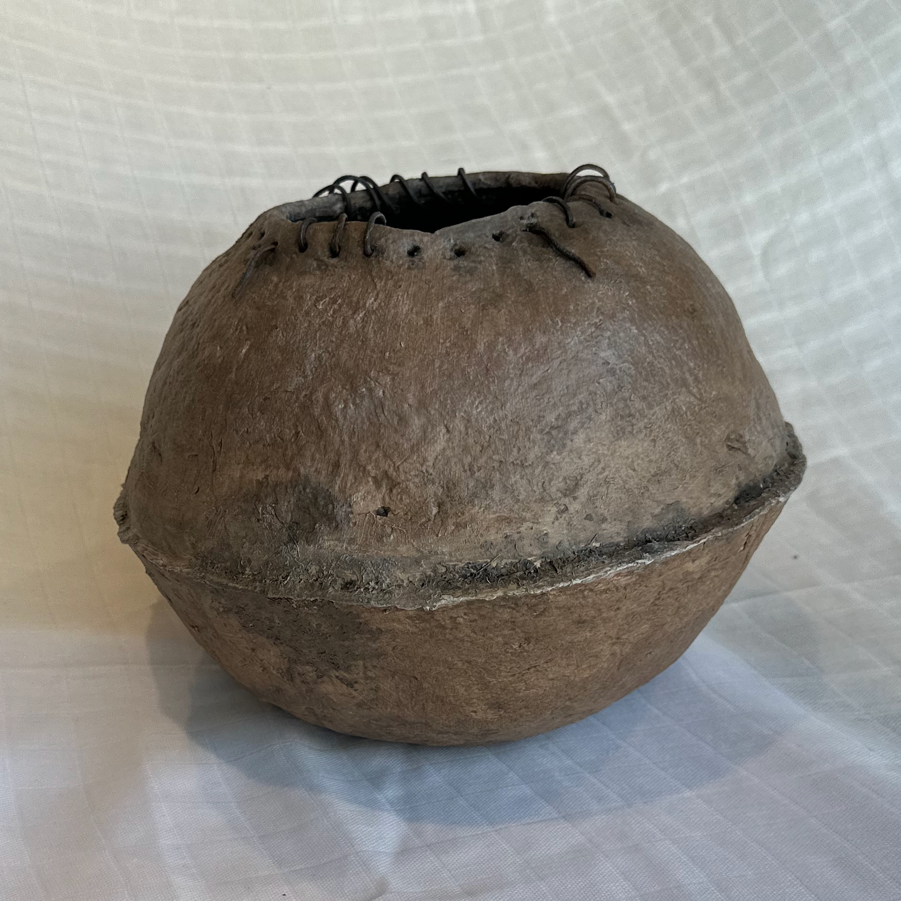

Sculptures & Vessels
Original, one of a kind pieces
The Ash Collection explores weathered forms, erosion and the beauty found in imperfection. Each sculptural work reflects on fragility, resilience and what remains.

An exploration of organic forms, weathered surfaces and the quiet beauty of imperfection. Discover individually handcrafted sculptural objects, curated pairings and inspiration for creating your own arrangements.

A gathering of unconventional characters, each with a personality entirely their own. Playful, imperfect and unapologetically individual, these handcrafted sculptures celebrate eccentricity, unexpected details and the charm of being a little different.

An exploration of the experiences that shape us and the traces they leave behind. Through imperfect forms, weathered surfaces and symbolic details, these handcrafted sculptures give physical expression to vulnerability, resilience and the complexities of being human. Each piece holds a story — some deeply personal, others quietly universal.
